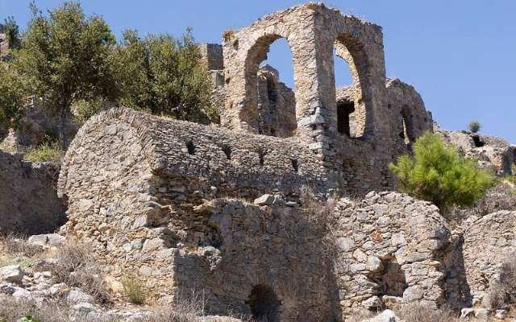
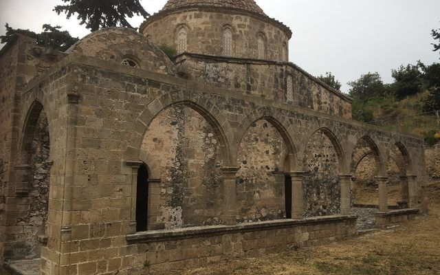
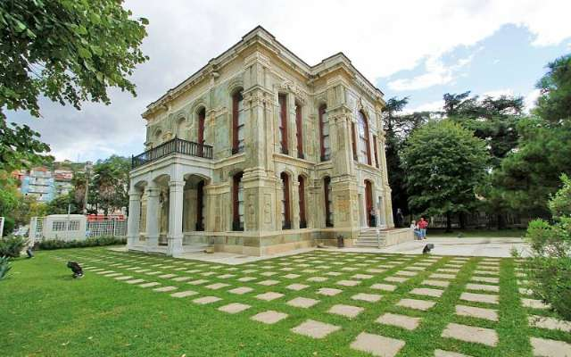
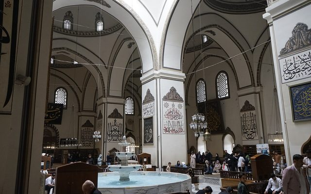
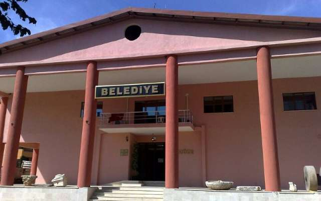
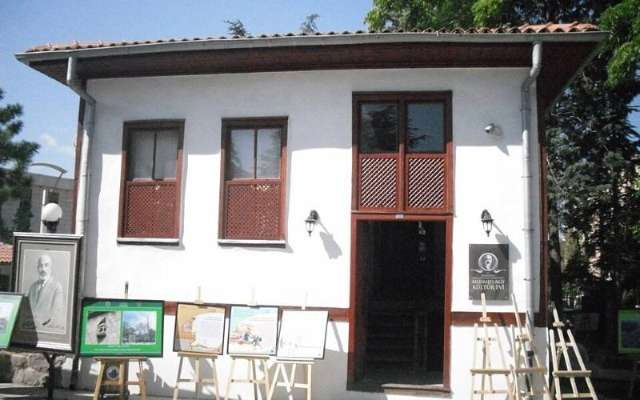
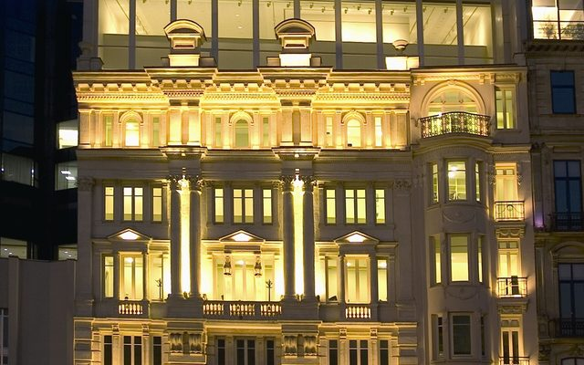
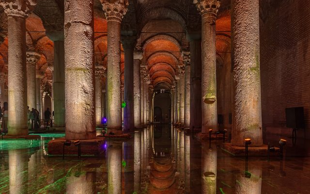
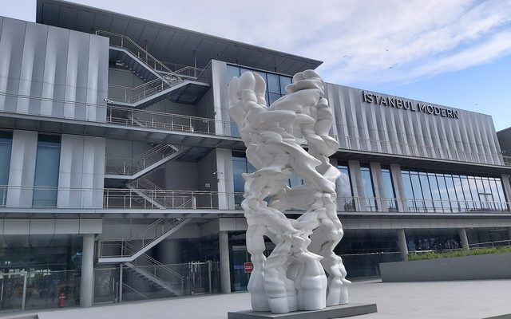
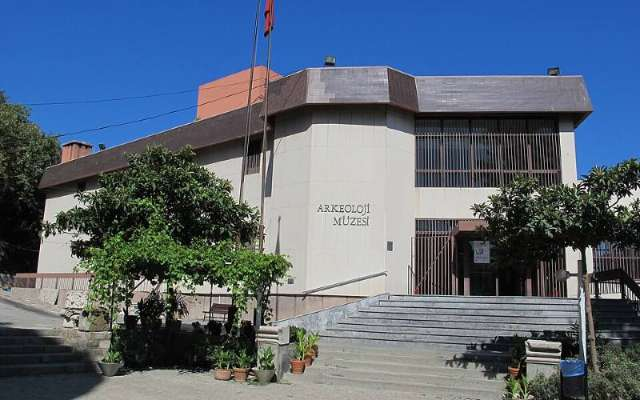

411 स्थान
 अफ़्रोदिसियास संग्रहालय और पुरातात्विक स्थलआयदिन · पुरातात्विक स्थल
अफ़्रोदिसियास संग्रहालय और पुरातात्विक स्थलआयदिन · पुरातात्विक स्थल आनी पुरातात्विक स्थलकार्स · पुरातात्विक स्थल
आनी पुरातात्विक स्थलकार्स · पुरातात्विक स्थल अर्सलानतेपे पुरातात्विक स्थलमालात्या · पुरातात्विक स्थल
अर्सलानतेपे पुरातात्विक स्थलमालात्या · पुरातात्विक स्थल पर्गामम अक्रोपोलिसइज़मिर · पुरातात्विक स्थल
पर्गामम अक्रोपोलिसइज़मिर · पुरातात्विक स्थल पर्गामम एस्क्लेपियन पुरातात्विक स्थलइज़मिर · पुरातात्विक स्थल
पर्गामम एस्क्लेपियन पुरातात्विक स्थलइज़मिर · पुरातात्विक स्थल बेर्गामा लाल बेसिलिकाइज़मिर · पुरातात्विक स्थल
बेर्गामा लाल बेसिलिकाइज़मिर · पुरातात्विक स्थल देरिनकुयू भूमिगत नगरनेवशेहिर · भूमिगत नगर
देरिनकुयू भूमिगत नगरनेवशेहिर · भूमिगत नगर इफ़िसुसइज़मिर · पुरातात्विक स्थल
इफ़िसुसइज़मिर · पुरातात्विक स्थल एल नज़र चर्चनेवशेहिर · धार्मिक इमारत
एल नज़र चर्चनेवशेहिर · धार्मिक इमारत गोर्डियन संग्रहालयअंकारा · संग्रहालय
गोर्डियन संग्रहालयअंकारा · संग्रहालय गोबेकलीतेपेशानलीउर्फ़ा · पुरातात्विक स्थल
गोबेकलीतेपेशानलीउर्फ़ा · पुरातात्विक स्थल ग्योरेमे खुला संग्रहालयनेवशेहिर · पुरातात्विक स्थल
ग्योरेमे खुला संग्रहालयनेवशेहिर · पुरातात्विक स्थल हत्तूसाचोरुम · पुरातात्विक स्थल
हत्तूसाचोरुम · पुरातात्विक स्थल हिएरापोलिस (पामुक्काले) पुरातात्विक स्थलदेनिज़्ली · पुरातात्विक स्थल
हिएरापोलिस (पामुक्काले) पुरातात्विक स्थलदेनिज़्ली · पुरातात्विक स्थल अंधेरा चर्च (ग्योरेमे)नेवशेहिर · धार्मिक इमारत
अंधेरा चर्च (ग्योरेमे)नेवशेहिर · धार्मिक इमारत कायमाक्ली भूमिगत नगरनेवशेहिर · भूमिगत नगर
कायमाक्ली भूमिगत नगरनेवशेहिर · भूमिगत नगर नेमरुत पर्वतआदियामान · पुरातात्विक स्थल
नेमरुत पर्वतआदियामान · पुरातात्विक स्थल त्रॉयचानाक्काले · पुरातात्विक स्थल
त्रॉयचानाक्काले · पुरातात्विक स्थल ज़ैंथोस पुरातात्विक स्थलअंताल्या · पुरातात्विक स्थल
ज़ैंथोस पुरातात्विक स्थलअंताल्या · पुरातात्विक स्थल ज़ेल्वे – पाशाबाग्लारी पुरातात्विक स्थलनेवशेहिर · पुरातात्विक स्थल
ज़ेल्वे – पाशाबाग्लारी पुरातात्विक स्थलनेवशेहिर · पुरातात्विक स्थल चातलह्यूयुक पुरातात्विक स्थलकोन्या · पुरातात्विक स्थल
चातलह्यूयुक पुरातात्विक स्थलकोन्या · पुरातात्विक स्थल चावुशिन (चावुशिन चर्च)नेवशेहिर · पुरातात्विक स्थल
चावुशिन (चावुशिन चर्च)नेवशेहिर · पुरातात्विक स्थल 15 जुलाई लोकतंत्र संग्रहालयअंकारा · संग्रहालय
15 जुलाई लोकतंत्र संग्रहालयअंकारा · संग्रहालय आदम मित्स्केविच संग्रहालयइस्तांबुल · संग्रहालय
आदम मित्स्केविच संग्रहालयइस्तांबुल · संग्रहालय अदाना अतातुर्क गृह संग्रहालयअदाना · संग्रहालय
अदाना अतातुर्क गृह संग्रहालयअदाना · संग्रहालय अदाना संग्रहालयअदाना · संग्रहालय
अदाना संग्रहालयअदाना · संग्रहालय आदियामान संग्रहालयआदियामान · संग्रहालय
आदियामान संग्रहालयआदियामान · संग्रहालय अफ़्योनकाराहिसार संग्रहालयअफ़्योनकाराहिसार · संग्रहालय
अफ़्योनकाराहिसार संग्रहालयअफ़्योनकाराहिसार · संग्रहालय स्मिर्ना अगोरा पुरातात्विक स्थलइज़मिर · पुरातात्विक स्थल
स्मिर्ना अगोरा पुरातात्विक स्थलइज़मिर · पुरातात्विक स्थल अहलात संग्रहालयबितलिस · संग्रहालय
अहलात संग्रहालयबितलिस · संग्रहालय अहलात सेल्जुक क़ब्रिस्तानबितलिस · पुरातात्विक स्थल
अहलात सेल्जुक क़ब्रिस्तानबितलिस · पुरातात्विक स्थल अहरिदा सिनेगॉगइस्तांबुल · धार्मिक इमारतआइगाई पुरातात्विक स्थलमानीसा · पुरातात्विक स्थल
अहरिदा सिनेगॉगइस्तांबुल · धार्मिक इमारतआइगाई पुरातात्विक स्थलमानीसा · पुरातात्विक स्थल आइज़ानोई पुरातात्विक स्थलक्युताह्या · पुरातात्विक स्थलअक्दामार स्मारक संग्रहालयवान · संग्रहालयअक्साराय मठ घाटीअक्साराय · पुरातात्विक स्थल
आइज़ानोई पुरातात्विक स्थलक्युताह्या · पुरातात्विक स्थलअक्दामार स्मारक संग्रहालयवान · संग्रहालयअक्साराय मठ घाटीअक्साराय · पुरातात्विक स्थल अक्साराय संग्रहालयअक्साराय · संग्रहालय
अक्साराय संग्रहालयअक्साराय · संग्रहालय अक्शेहिर नसरुद्दीन होजा पुरातत्व और नृवंशविज्ञान संग्रहालयकोन्या · संग्रहालयअक्शेमसेद्दीन का मक़बराबोलू · धार्मिक इमारत
अक्शेहिर नसरुद्दीन होजा पुरातत्व और नृवंशविज्ञान संग्रहालयकोन्या · संग्रहालयअक्शेमसेद्दीन का मक़बराबोलू · धार्मिक इमारत अलाबांडा पुरातात्विक स्थलआयदिन · पुरातात्विक स्थल
अलाबांडा पुरातात्विक स्थलआयदिन · पुरातात्विक स्थल अलाजाह्यूयुक संग्रहालय और पुरातात्विक स्थलचोरुम · पुरातात्विक स्थलअलाउद्दीन यावाश्चा गृह संग्रहालयकिलिस · संग्रहालय
अलाजाह्यूयुक संग्रहालय और पुरातात्विक स्थलचोरुम · पुरातात्विक स्थलअलाउद्दीन यावाश्चा गृह संग्रहालयकिलिस · संग्रहालय अलाहान मठमेर्सिन · धार्मिक इमारतअलान्या अतातुर्क गृह संग्रहालयअंताल्या · संग्रहालय
अलाहान मठमेर्सिन · धार्मिक इमारतअलान्या अतातुर्क गृह संग्रहालयअंताल्या · संग्रहालय अलान्या क़िलाअंताल्या · क़िला और ऐतिहासिक इमारत
अलान्या क़िलाअंताल्या · क़िला और ऐतिहासिक इमारत अलान्या संग्रहालयअंताल्या · संग्रहालय
अलान्या संग्रहालयअंताल्या · संग्रहालय आलाशेहिर (फ़िलाडेल्फ़िया) पुरातात्विक स्थलमानीसा · पुरातात्विक स्थल
आलाशेहिर (फ़िलाडेल्फ़िया) पुरातात्विक स्थलमानीसा · पुरातात्विक स्थल अलेक्ज़ान्ड्रिया त्रोआस पुरातात्विक स्थलचानाक्काले · पुरातात्विक स्थल
अलेक्ज़ान्ड्रिया त्रोआस पुरातात्विक स्थलचानाक्काले · पुरातात्विक स्थल अलिंडा पुरातात्विक स्थलआयदिन · पुरातात्विक स्थल
अलिंडा पुरातात्विक स्थलआयदिन · पुरातात्विक स्थल अमास्रा संग्रहालयबार्तिन · संग्रहालय
अमास्रा संग्रहालयबार्तिन · संग्रहालय अमास्या संग्रहालयअमास्या · संग्रहालय
अमास्या संग्रहालयअमास्या · संग्रहालय अमिंतास चट्टानी क़ब्रमुग़ला · पुरातात्विक स्थल
अमिंतास चट्टानी क़ब्रमुग़ला · पुरातात्विक स्थल अनातोलियाई सभ्यता संग्रहालयअंकारा · संग्रहालयअनामुर संग्रहालयमेर्सिन · संग्रहालय
अनातोलियाई सभ्यता संग्रहालयअंकारा · संग्रहालयअनामुर संग्रहालयमेर्सिन · संग्रहालय अनावार्ज़ा पुरातात्विक स्थलअदाना · पुरातात्विक स्थल
अनावार्ज़ा पुरातात्विक स्थलअदाना · पुरातात्विक स्थल
अनेमुरियम पुरातात्विक स्थलमेर्सिन · पुरातात्विक स्थल अंताल्या अतातुर्क गृह संग्रहालयअंताल्या · संग्रहालय
अंताल्या अतातुर्क गृह संग्रहालयअंताल्या · संग्रहालय अंताल्या नृवंशविज्ञान संग्रहालयअंताल्या · संग्रहालय
अंताल्या नृवंशविज्ञान संग्रहालयअंताल्या · संग्रहालय अंताल्या संग्रहालयअंताल्या · संग्रहालयअंताल्या नेक्रोपोलिस संग्रहालयअंताल्या · संग्रहालय
अंताल्या संग्रहालयअंताल्या · संग्रहालयअंताल्या नेक्रोपोलिस संग्रहालयअंताल्या · संग्रहालय स्येद्रा प्राचीन नगरअंताल्या · पुरातात्विक स्थल
स्येद्रा प्राचीन नगरअंताल्या · पुरातात्विक स्थल पिसिडियाई एंटिओक पुरातात्विक स्थलइस्पार्ता · पुरातात्विक स्थल
पिसिडियाई एंटिओक पुरातात्विक स्थलइस्पार्ता · पुरातात्विक स्थल
एंटीफ़ोनितिस चर्चगिर्ने (किरेनिया) · धार्मिक इमारत अपोलो स्मिंथियॉन पुरातात्विक स्थलचानाक्काले · पुरातात्विक स्थल
अपोलो स्मिंथियॉन पुरातात्विक स्थलचानाक्काले · पुरातात्विक स्थल प्रेरित अंद्रियास मठइस्केले (त्रिकोमो) · धार्मिक इमारत
प्रेरित अंद्रियास मठइस्केले (त्रिकोमो) · धार्मिक इमारत आर्सामेइया पुरातात्विक स्थलआदियामान · पुरातात्विक स्थल
आर्सामेइया पुरातात्विक स्थलआदियामान · पुरातात्विक स्थल आरीकांडा पुरातात्विक स्थलअंताल्या · पुरातात्विक स्थल
आरीकांडा पुरातात्विक स्थलअंताल्या · पुरातात्विक स्थल आस्पेंडोसअंताल्या · पुरातात्विक स्थल
आस्पेंडोसअंताल्या · पुरातात्विक स्थल आसोस पुरातात्विक स्थलचानाक्काले · पुरातात्विक स्थलदियारबाकिर अतातुर्क गृह संग्रहालयदियारबाकिर · संग्रहालयउशाक अतातुर्क और नृवंशविज्ञान संग्रहालयउशाक · संग्रहालय
आसोस पुरातात्विक स्थलचानाक्काले · पुरातात्विक स्थलदियारबाकिर अतातुर्क गृह संग्रहालयदियारबाकिर · संग्रहालयउशाक अतातुर्क और नृवंशविज्ञान संग्रहालयउशाक · संग्रहालय अतातुर्क, रेदीफ़ और नृवंशविज्ञान संग्रहालयकोजाएली · संग्रहालय
अतातुर्क, रेदीफ़ और नृवंशविज्ञान संग्रहालयकोजाएली · संग्रहालय एटलस 1948 इस्तांबुल सिनेमा संग्रहालयइस्तांबुल · संग्रहालय
एटलस 1948 इस्तांबुल सिनेमा संग्रहालयइस्तांबुल · संग्रहालय
शिकारगाह महल संग्रहालयकोजाएली · संग्रहालय हागिया आइरीनइस्तांबुल · धार्मिक इमारत
हागिया आइरीनइस्तांबुल · धार्मिक इमारत आया सोफ़िया इतिहास और अनुभव संग्रहालयइस्तांबुल · संग्रहालय
आया सोफ़िया इतिहास और अनुभव संग्रहालयइस्तांबुल · संग्रहालय हागिया सोफ़िया महान मस्जिदइस्तांबुल · धार्मिक इमारत
हागिया सोफ़िया महान मस्जिदइस्तांबुल · धार्मिक इमारत अयासुलुक संत जॉन बेसिलिकाइज़मिर · पुरातात्विक स्थल
अयासुलुक संत जॉन बेसिलिकाइज़मिर · पुरातात्विक स्थल अयासुलुक क़िलाइज़मिर · क़िला और ऐतिहासिक इमारत
अयासुलुक क़िलाइज़मिर · क़िला और ऐतिहासिक इमारत आयदिन पुरातत्व संग्रहालयआयदिन · संग्रहालयअयिया त्रियास बेसिलिकाइस्केले (त्रिकोमो) · धार्मिक इमारत
आयदिन पुरातत्व संग्रहालयआयदिन · संग्रहालयअयिया त्रियास बेसिलिकाइस्केले (त्रिकोमो) · धार्मिक इमारत संत निकोलस स्मारक संग्रहालयअंताल्या · संग्रहालयसंत मर्क्यूरियस भूमिगत नगरअक्साराय · भूमिगत नगर
संत निकोलस स्मारक संग्रहालयअंताल्या · संग्रहालयसंत मर्क्यूरियस भूमिगत नगरअक्साराय · भूमिगत नगर आशिक वेयसेल संग्रहालयसिवास · संग्रहालय
आशिक वेयसेल संग्रहालयसिवास · संग्रहालय आशिकली ह्यूयुकअक्साराय · पुरातात्विक स्थलबाफ़्रा संग्रहालयसामसुन · संग्रहालय
आशिकली ह्यूयुकअक्साराय · पुरातात्विक स्थलबाफ़्रा संग्रहालयसामसुन · संग्रहालय बालिक्लीगोल (पवित्र मछलियों का तालाब)शानलीउर्फ़ा · धार्मिक इमारत
बालिक्लीगोल (पवित्र मछलियों का तालाब)शानलीउर्फ़ा · धार्मिक इमारत बांदिरमा संग्रहालयबालिकेसिर · संग्रहालय
बांदिरमा संग्रहालयबालिकेसिर · संग्रहालय पश्चिमी मोर्चा मुख्यालय संग्रहालयकोन्या · संग्रहालय
पश्चिमी मोर्चा मुख्यालय संग्रहालयकोन्या · संग्रहालय बायबुर्त बाक्सी संग्रहालयबायबुर्त · संग्रहालय
बायबुर्त बाक्सी संग्रहालयबायबुर्त · संग्रहालय बेलापाइस मठगिर्ने (किरेनिया) · धार्मिक इमारत
बेलापाइस मठगिर्ने (किरेनिया) · धार्मिक इमारत बेर्गामा संग्रहालयइज़मिर · संग्रहालयबेशकोनाक्लार नृवंशविज्ञान संग्रहालय और पारंपरिक मालात्या घरमालात्या · संग्रहालयबिलेजिक संग्रहालयबिलेजिक · संग्रहालय
बेर्गामा संग्रहालयइज़मिर · संग्रहालयबेशकोनाक्लार नृवंशविज्ञान संग्रहालय और पारंपरिक मालात्या घरमालात्या · संग्रहालयबिलेजिक संग्रहालयबिलेजिक · संग्रहालय बिर्गी चाकिराआ हवेलीइज़मिर · संग्रहालयबितलिस नृवंशविज्ञान संग्रहालयबितलिस · संग्रहालय
बिर्गी चाकिराआ हवेलीइज़मिर · संग्रहालयबितलिस नृवंशविज्ञान संग्रहालयबितलिस · संग्रहालय ब्लाउंडोस पुरातात्विक स्थलउशाक · पुरातात्विक स्थल
ब्लाउंडोस पुरातात्विक स्थलउशाक · पुरातात्विक स्थल बोद्रुम प्राचीन रंगमंचमुग़ला · पुरातात्विक स्थलबोद्रुम सेर्चे लिमानी काँच-पोत प्रदर्शनी हॉलमुग़ला · संग्रहालय
बोद्रुम प्राचीन रंगमंचमुग़ला · पुरातात्विक स्थलबोद्रुम सेर्चे लिमानी काँच-पोत प्रदर्शनी हॉलमुग़ला · संग्रहालय बोद्रुम जलगत पुरातत्व संग्रहालयमुग़ला · संग्रहालय
बोद्रुम जलगत पुरातत्व संग्रहालयमुग़ला · संग्रहालय बोलू संग्रहालयबोलू · संग्रहालय
बोलू संग्रहालयबोलू · संग्रहालय बोआज़कोय संग्रहालयचोरुम · संग्रहालय
बोआज़कोय संग्रहालयचोरुम · संग्रहालय बुफ़्फ़ावेंतो किलागिर्ने (किरेनिया) · क़िला और ऐतिहासिक इमारत
बुफ़्फ़ावेंतो किलागिर्ने (किरेनिया) · क़िला और ऐतिहासिक इमारत बुल्गारियाई संत स्टीफ़न गिरजाघर (लोहे का गिरजाघर)इस्तांबुल · धार्मिक इमारत
बुल्गारियाई संत स्टीफ़न गिरजाघर (लोहे का गिरजाघर)इस्तांबुल · धार्मिक इमारत बुर्दुर संग्रहालयबुर्दुर · संग्रहालय
बुर्दुर संग्रहालयबुर्दुर · संग्रहालय बुर्सा पुरातत्व संग्रहालयबुर्सा · संग्रहालय
बुर्सा पुरातत्व संग्रहालयबुर्सा · संग्रहालय बुर्सा अतातुर्क गृह संग्रहालयबुर्सा · संग्रहालय
बुर्सा अतातुर्क गृह संग्रहालयबुर्सा · संग्रहालय बुर्सा तुर्क-इस्लामी कला संग्रहालयबुर्सा · संग्रहालय
बुर्सा तुर्क-इस्लामी कला संग्रहालयबुर्सा · संग्रहालय
बुर्सा उलू मस्जिदबुर्सा · धार्मिक इमारत बुर्सा हरी मस्जिद और हरा मकबराबुर्सा · धार्मिक इमारतबुर्सा इज़निक झील बेसिलिकाबुर्सा · धार्मिक इमारत
बुर्सा हरी मस्जिद और हरा मकबराबुर्सा · धार्मिक इमारतबुर्सा इज़निक झील बेसिलिकाबुर्सा · धार्मिक इमारत ब्युयुक हानलेफ़कोशा (निकोसिया) · क़िला और ऐतिहासिक इमारत
ब्युयुक हानलेफ़कोशा (निकोसिया) · क़िला और ऐतिहासिक इमारत महान महल मोज़ेक संग्रहालयइस्तांबुल · संग्रहालय
महान महल मोज़ेक संग्रहालयइस्तांबुल · संग्रहालय जाहित सित्की तारांजी गृह नृवंशविज्ञान संग्रहालयदियारबाकिर · संग्रहालयजेहेन्नेमाग्ज़ी गुफाएँज़ोंगुलदाक · प्राकृतिक स्थल
जाहित सित्की तारांजी गृह नृवंशविज्ञान संग्रहालयदियारबाकिर · संग्रहालयजेहेन्नेमाग्ज़ी गुफाएँज़ोंगुलदाक · प्राकृतिक स्थल गणराज्य संग्रहालयअंकारा · संग्रहालय
गणराज्य संग्रहालयअंकारा · संग्रहालय दारा पुरातात्विक स्थलमार्दिन · पुरातात्विक स्थल
दारा पुरातात्विक स्थलमार्दिन · पुरातात्विक स्थल देनिज़्ली अतातुर्क और नृवंशविज्ञान संग्रहालयदेनिज़्ली · संग्रहालय
देनिज़्ली अतातुर्क और नृवंशविज्ञान संग्रहालयदेनिज़्ली · संग्रहालय देनिज़्ली नगर संग्रहालयदेनिज़्ली · संग्रहालय
देनिज़्ली नगर संग्रहालयदेनिज़्ली · संग्रहालय त्रिपोलिस पुरातात्विक स्थलदेनिज़्ली · पुरातात्विक स्थल
त्रिपोलिस पुरातात्विक स्थलदेनिज़्ली · पुरातात्विक स्थल दरवेश पाशा हवेलीलेफ़कोशा (निकोसिया) · संग्रहालय
दरवेश पाशा हवेलीलेफ़कोशा (निकोसिया) · संग्रहालय देयरुलज़फ़रान मठमार्दिन · धार्मिक इमारत
देयरुलज़फ़रान मठमार्दिन · धार्मिक इमारत दीदिम अपोलो मंदिरआयदिन · पुरातात्विक स्थल
दीदिम अपोलो मंदिरआयदिन · पुरातात्विक स्थल दिव्रिगी उलू मस्जिद और अस्पतालसिवास · धार्मिक इमारत
दिव्रिगी उलू मस्जिद और अस्पतालसिवास · धार्मिक इमारत दियारबाकिर पुरातत्व संग्रहालयदियारबाकिर · संग्रहालय
दियारबाकिर पुरातत्व संग्रहालयदियारबाकिर · संग्रहालय दियारबकिर उलू मस्जिददियारबाकिर · धार्मिक इमारत
दियारबकिर उलू मस्जिददियारबाकिर · धार्मिक इमारत दोल्माबाहचे महलइस्तांबुल · क़िला और ऐतिहासिक इमारतप्राकृतिक इतिहास संग्रहालयबुर्दुर · संग्रहालय
दोल्माबाहचे महलइस्तांबुल · क़िला और ऐतिहासिक इमारतप्राकृतिक इतिहास संग्रहालयबुर्दुर · संग्रहालय एदिर्ने महान सिनेगॉगएदिर्ने · धार्मिक इमारतएदिर्ने हिदिरलिक तोपख़ाना बाल्कन इतिहास संग्रहालयएदिर्ने · संग्रहालय
एदिर्ने महान सिनेगॉगएदिर्ने · धार्मिक इमारतएदिर्ने हिदिरलिक तोपख़ाना बाल्कन इतिहास संग्रहालयएदिर्ने · संग्रहालय एदिर्ने मैसेडोनियाई बुर्जएदिर्ने · क़िला और ऐतिहासिक इमारत
एदिर्ने मैसेडोनियाई बुर्जएदिर्ने · क़िला और ऐतिहासिक इमारत एदिर्ने संग्रहालयएदिर्ने · संग्रहालय
एदिर्ने संग्रहालयएदिर्ने · संग्रहालय एदिर्ने सेलिमिये मस्जिदएदिर्ने · धार्मिक इमारतइफ़िसुस अनुभव संग्रहालयइज़मिर · संग्रहालय
एदिर्ने सेलिमिये मस्जिदएदिर्ने · धार्मिक इमारतइफ़िसुस अनुभव संग्रहालयइज़मिर · संग्रहालय इफ़िसुस संग्रहालयइज़मिर · संग्रहालय
इफ़िसुस संग्रहालयइज़मिर · संग्रहालय इफ़िसुस ढलान-घरइज़मिर · पुरातात्विक स्थलएलाज़िग संग्रहालयएलाज़िग · संग्रहालयएल्बिस्तान नगर संग्रहालयकहरामानमाराश · संग्रहालयएलमाली संग्रहालयअंताल्या · संग्रहालय
इफ़िसुस ढलान-घरइज़मिर · पुरातात्विक स्थलएलाज़िग संग्रहालयएलाज़िग · संग्रहालयएल्बिस्तान नगर संग्रहालयकहरामानमाराश · संग्रहालयएलमाली संग्रहालयअंताल्या · संग्रहालय एनकोमी (अलासिया) पुरातात्विक स्थलग़ाज़ीमागुसा (फ़ामागुस्ता) · पुरातात्विक स्थलएरेग्ली संग्रहालयकोन्या · संग्रहालयएर्मेनेक अहमत केलेशोग्लु पुरातत्व और नृवंशविज्ञान संग्रहालयकरामान · संग्रहालय
एनकोमी (अलासिया) पुरातात्विक स्थलग़ाज़ीमागुसा (फ़ामागुस्ता) · पुरातात्विक स्थलएरेग्ली संग्रहालयकोन्या · संग्रहालयएर्मेनेक अहमत केलेशोग्लु पुरातत्व और नृवंशविज्ञान संग्रहालयकरामान · संग्रहालय एर्ज़िंजान संग्रहालयएर्ज़िंजान · संग्रहालय
एर्ज़िंजान संग्रहालयएर्ज़िंजान · संग्रहालय एर्ज़ुरुम अतातुर्क गृह संग्रहालयएर्ज़ुरुम · संग्रहालय
एर्ज़ुरुम अतातुर्क गृह संग्रहालयएर्ज़ुरुम · संग्रहालय एर्ज़ुरुम क़िलाएर्ज़ुरुम · क़िला और ऐतिहासिक इमारत
एर्ज़ुरुम क़िलाएर्ज़ुरुम · क़िला और ऐतिहासिक इमारत एर्ज़ुरुम संग्रहालयएर्ज़ुरुम · संग्रहालयएर्ज़ुरुम चित्रकला और मूर्तिकला संग्रहालयएर्ज़ुरुम · संग्रहालय
एर्ज़ुरुम संग्रहालयएर्ज़ुरुम · संग्रहालयएर्ज़ुरुम चित्रकला और मूर्तिकला संग्रहालयएर्ज़ुरुम · संग्रहालय एती पुरातत्व संग्रहालयएस्कीशेहिर · संग्रहालय
एती पुरातत्व संग्रहालयएस्कीशेहिर · संग्रहालय नृवंशविज्ञान संग्रहालयअंकारा · संग्रहालय
नृवंशविज्ञान संग्रहालयअंकारा · संग्रहालय एयूप सुल्तान मस्जिदइस्तांबुल · धार्मिक इमारतविश्वव्यापी पैट्रियार्केट और संत जॉर्ज गिरजाघरइस्तांबुल · धार्मिक इमारत
एयूप सुल्तान मस्जिदइस्तांबुल · धार्मिक इमारतविश्वव्यापी पैट्रियार्केट और संत जॉर्ज गिरजाघरइस्तांबुल · धार्मिक इमारत फ़ेतिये गेमिलर द्वीपमुग़ला · पुरातात्विक स्थल
फ़ेतिये गेमिलर द्वीपमुग़ला · पुरातात्विक स्थल फ़ेतिये कायाकोयमुग़ला · पुरातात्विक स्थल
फ़ेतिये कायाकोयमुग़ला · पुरातात्विक स्थल फ़ेतिये लेटून पुरातात्विक स्थलमुग़ला · पुरातात्विक स्थल
फ़ेतिये लेटून पुरातात्विक स्थलमुग़ला · पुरातात्विक स्थल फ़ेतिये संग्रहालयइस्तांबुल · संग्रहालयफ़ेतिये संग्रहालयमुग़ला · संग्रहालय
फ़ेतिये संग्रहालयइस्तांबुल · संग्रहालयफ़ेतिये संग्रहालयमुग़ला · संग्रहालय फ़ेतिये पिनारा पुरातात्विक स्थलमुग़ला · पुरातात्विक स्थल
फ़ेतिये पिनारा पुरातात्विक स्थलमुग़ला · पुरातात्विक स्थल त्लोस पुरातात्विक स्थल (फ़ेतिये)मुग़ला · पुरातात्विक स्थलफ़िल्योस (तियोस) पुरातात्विक स्थलज़ोंगुलदाक · पुरातात्विक स्थल
त्लोस पुरातात्विक स्थल (फ़ेतिये)मुग़ला · पुरातात्विक स्थलफ़िल्योस (तियोस) पुरातात्विक स्थलज़ोंगुलदाक · पुरातात्विक स्थल गलाता मेवलेवीख़ाना संग्रहालयइस्तांबुल · संग्रहालय
गलाता मेवलेवीख़ाना संग्रहालयइस्तांबुल · संग्रहालय ग़ाज़ी संग्रहालयसामसुन · संग्रहालय
ग़ाज़ी संग्रहालयसामसुन · संग्रहालय गाज़ियांतेप पुरातत्व संग्रहालयगाज़ियांतेप · संग्रहालय
गाज़ियांतेप पुरातत्व संग्रहालयगाज़ियांतेप · संग्रहालय गाज़ियांतेप क़िलागाज़ियांतेप · क़िला और ऐतिहासिक इमारतजर्मानिकिया मोज़ेक क्षेत्रकहरामानमाराश · पुरातात्विक स्थलगिरेसुन संग्रहालयगिरेसुन · संग्रहालय
गाज़ियांतेप क़िलागाज़ियांतेप · क़िला और ऐतिहासिक इमारतजर्मानिकिया मोज़ेक क्षेत्रकहरामानमाराश · पुरातात्विक स्थलगिरेसुन संग्रहालयगिरेसुन · संग्रहालय किरेनिया किला और जहाज़-अवशेष संग्रहालयगिर्ने (किरेनिया) · क़िला और ऐतिहासिक इमारत
किरेनिया किला और जहाज़-अवशेष संग्रहालयगिर्ने (किरेनिया) · क़िला और ऐतिहासिक इमारत किरेनिया आइकन संग्रहालयगिर्ने (किरेनिया) · संग्रहालय
किरेनिया आइकन संग्रहालयगिर्ने (किरेनिया) · संग्रहालय ग्योज़्ने क़िलामेर्सिन · क़िला और ऐतिहासिक इमारत
ग्योज़्ने क़िलामेर्सिन · क़िला और ऐतिहासिक इमारत ग्युलशेहिर संत योहन्ना चर्चनेवशेहिर · धार्मिक इमारतग्युम्युशहाने संग्रहालयग्युम्युशहाने · संग्रहालय
ग्युलशेहिर संत योहन्ना चर्चनेवशेहिर · धार्मिक इमारतग्युम्युशहाने संग्रहालयग्युम्युशहाने · संग्रहालय ग्युम्युश्लेर मठ और भूमिगत नगरनिगदे · भूमिगत नगर
ग्युम्युश्लेर मठ और भूमिगत नगरनिगदे · भूमिगत नगर ग्युपग्युपोग्लु हवेली नृवंशविज्ञान संग्रहालयकायसेरी · संग्रहालय
ग्युपग्युपोग्लु हवेली नृवंशविज्ञान संग्रहालयकायसेरी · संग्रहालय ग्युज़ेलयुर्त पुरातत्व और प्राकृतिक इतिहास संग्रहालयग्युज़ेलयुर्त (मोर्फ़ू) · संग्रहालय
ग्युज़ेलयुर्त पुरातत्व और प्राकृतिक इतिहास संग्रहालयग्युज़ेलयुर्त (मोर्फ़ू) · संग्रहालय हाजीबेक्ताश संग्रहालयनेवशेहिर · संग्रहालयहैड्रियानोपोलिस पुरातात्विक स्थलकाराब्युक · पुरातात्विक स्थल
हाजीबेक्ताश संग्रहालयनेवशेहिर · संग्रहालयहैड्रियानोपोलिस पुरातात्विक स्थलकाराब्युक · पुरातात्विक स्थल हाफ़िज़ा 15 जुलाई संग्रहालयइस्तांबुल · संग्रहालय
हाफ़िज़ा 15 जुलाई संग्रहालयइस्तांबुल · संग्रहालय हालेप्लीबाहचे मोज़ेक संग्रहालयशानलीउर्फ़ा · संग्रहालयहमीदिये तोपख़ाना और चानाक्काले युद्ध इतिहास संग्रहालयचानाक्काले · संग्रहालय
हालेप्लीबाहचे मोज़ेक संग्रहालयशानलीउर्फ़ा · संग्रहालयहमीदिये तोपख़ाना और चानाक्काले युद्ध इतिहास संग्रहालयचानाक्काले · संग्रहालय हरपुत क़िलाएलाज़िग · क़िला और ऐतिहासिक इमारत
हरपुत क़िलाएलाज़िग · क़िला और ऐतिहासिक इमारत हर्रान पुरातात्विक स्थलशानलीउर्फ़ा · पुरातात्विक स्थल
हर्रान पुरातात्विक स्थलशानलीउर्फ़ा · पुरातात्विक स्थल हसनकेफ़ संग्रहालय और पुरातात्विक स्थलबातमान · पुरातात्विक स्थल
हसनकेफ़ संग्रहालय और पुरातात्विक स्थलबातमान · पुरातात्विक स्थल हताय पुरातत्व संग्रहालयहताय · संग्रहालयहताय नेजमी आसफ़ुरोग्लु पुरातत्व संग्रहालयहताय · संग्रहालय
हताय पुरातत्व संग्रहालयहताय · संग्रहालयहताय नेजमी आसफ़ुरोग्लु पुरातत्व संग्रहालयहताय · संग्रहालय हाज़ेरानलार हवेलीअमास्या · संग्रहालय
हाज़ेरानलार हवेलीअमास्या · संग्रहालय हिएरापोलिस (पामुक्काले) पुरातत्व संग्रहालयदेनिज़्ली · संग्रहालय
हिएरापोलिस (पामुक्काले) पुरातत्व संग्रहालयदेनिज़्ली · संग्रहालय होशाप किलावान · क़िला और ऐतिहासिक इमारत
होशाप किलावान · क़िला और ऐतिहासिक इमारत इआसोस पुरातात्विक स्थलमुग़ला · पुरातात्विक स्थल
इआसोस पुरातात्विक स्थलमुग़ला · पुरातात्विक स्थल इहलारा घाटीअक्साराय · पुरातात्विक स्थल
इहलारा घाटीअक्साराय · पुरातात्विक स्थल इस्पार्ता संग्रहालयइस्पार्ता · संग्रहालयकादीकालेसी पुरातात्विक स्थलआयदिन · पुरातात्विक स्थलकाहरामानकाज़ान 15 जुलाई शहीद और लोकतंत्र संग्रहालयअंकारा · संग्रहालय
इस्पार्ता संग्रहालयइस्पार्ता · संग्रहालयकादीकालेसी पुरातात्विक स्थलआयदिन · पुरातात्विक स्थलकाहरामानकाज़ान 15 जुलाई शहीद और लोकतंत्र संग्रहालयअंकारा · संग्रहालय काहरामानमाराश संग्रहालयकहरामानमाराश · संग्रहालय
काहरामानमाराश संग्रहालयकहरामानमाराश · संग्रहालय काहता येनीकाले क़िलाआदियामान · पुरातात्विक स्थल
काहता येनीकाले क़िलाआदियामान · पुरातात्विक स्थल कामान कालेह्यूयुक पुरातत्व संग्रहालयकिरशेहिर · पुरातात्विक स्थल
कामान कालेह्यूयुक पुरातत्व संग्रहालयकिरशेहिर · पुरातात्विक स्थल कानलीदिवाने पुरातात्विक स्थलमेर्सिन · पुरातात्विक स्थल
कानलीदिवाने पुरातात्विक स्थलमेर्सिन · पुरातात्विक स्थल कांतारा किलाइस्केले (त्रिकोमो) · क़िला और ऐतिहासिक इमारतसफ़रानबोलु संग्रहालयकाराब्युक · संग्रहालय
कांतारा किलाइस्केले (त्रिकोमो) · क़िला और ऐतिहासिक इमारतसफ़रानबोलु संग्रहालयकाराब्युक · संग्रहालय
काराजासु नृवंशविज्ञान संग्रहालयआयदिन · संग्रहालय कारादेनिज़ एरेग्ली संग्रहालयज़ोंगुलदाक · संग्रहालय
कारादेनिज़ एरेग्ली संग्रहालयज़ोंगुलदाक · संग्रहालय काराहानतेपे पुरातात्विक स्थलशानलीउर्फ़ा · पुरातात्विक स्थल
काराहानतेपे पुरातात्विक स्थलशानलीउर्फ़ा · पुरातात्विक स्थल कराइन गुफाअंताल्या · प्राकृतिक स्थल
कराइन गुफाअंताल्या · प्राकृतिक स्थल करामान संग्रहालयकरामान · संग्रहालय
करामान संग्रहालयकरामान · संग्रहालय कराताय (टाइल कृतियाँ) संग्रहालयकोन्या · संग्रहालय
कराताय (टाइल कृतियाँ) संग्रहालयकोन्या · संग्रहालय कराटेपे-अस्लानताश संग्रहालय और पुरातात्विक स्थलओस्मानिये · पुरातात्विक स्थल
कराटेपे-अस्लानताश संग्रहालय और पुरातात्विक स्थलओस्मानिये · पुरातात्विक स्थल करिये मस्जिद (खोरा)इस्तांबुल · धार्मिक इमारत
करिये मस्जिद (खोरा)इस्तांबुल · धार्मिक इमारत कार्स कॉकेशस मोर्चा युद्ध इतिहास संग्रहालयकार्स · संग्रहालय
कार्स कॉकेशस मोर्चा युद्ध इतिहास संग्रहालयकार्स · संग्रहालय कार्स संग्रहालयकार्स · संग्रहालय
कार्स संग्रहालयकार्स · संग्रहालय कास्ताबाला पुरातात्विक स्थलओस्मानिये · पुरातात्विक स्थलकस्तामोनु संग्रहालयकस्तामोनु · संग्रहालय
कास्ताबाला पुरातात्विक स्थलओस्मानिये · पुरातात्विक स्थलकस्तामोनु संग्रहालयकस्तामोनु · संग्रहालय कौनोस पुरातात्विक स्थलमुग़ला · पुरातात्विक स्थल
कौनोस पुरातात्विक स्थलमुग़ला · पुरातात्विक स्थल कायसेरी पुरातत्व संग्रहालयकायसेरी · संग्रहालय
कायसेरी पुरातत्व संग्रहालयकायसेरी · संग्रहालय कायसेरी अतातुर्क गृह संग्रहालयकायसेरी · संग्रहालय
कायसेरी अतातुर्क गृह संग्रहालयकायसेरी · संग्रहालय केस्किन सुलु मग़ारा भूमिगत नगरकिरिक्काले · भूमिगत नगर
केस्किन सुलु मग़ारा भूमिगत नगरकिरिक्काले · भूमिगत नगर किबिरा पुरातात्विक स्थलबुर्दुर · पुरातात्विक स्थलकिलिस संग्रहालयकिलिस · संग्रहालय
किबिरा पुरातात्विक स्थलबुर्दुर · पुरातात्विक स्थलकिलिस संग्रहालयकिलिस · संग्रहालय किलितबाहिर क़िला संग्रहालयचानाक्काले · संग्रहालय
किलितबाहिर क़िला संग्रहालयचानाक्काले · संग्रहालय क्लारोस पुरातात्विक स्थलइज़मिर · पुरातात्विक स्थलक्लाज़ोमेनाई पुरातात्विक स्थलइज़मिर · पुरातात्विक स्थलकोजाएली पुरातत्व संग्रहालयकोजाएली · संग्रहालय
क्लारोस पुरातात्विक स्थलइज़मिर · पुरातात्विक स्थलक्लाज़ोमेनाई पुरातात्विक स्थलइज़मिर · पुरातात्विक स्थलकोजाएली पुरातत्व संग्रहालयकोजाएली · संग्रहालय कोनुराल्प संग्रहालयद्यूज़जे · संग्रहालय
कोनुराल्प संग्रहालयद्यूज़जे · संग्रहालय कोन्या पुरातत्व संग्रहालयकोन्या · संग्रहालय
कोन्या पुरातत्व संग्रहालयकोन्या · संग्रहालय कोन्या अतातुर्क गृह संग्रहालयकोन्या · संग्रहालयकोन्या नृवंशविज्ञान संग्रहालयकोन्या · संग्रहालय
कोन्या अतातुर्क गृह संग्रहालयकोन्या · संग्रहालयकोन्या नृवंशविज्ञान संग्रहालयकोन्या · संग्रहालय कोशूत गृह संग्रहालयक्युताह्या · संग्रहालयशाही मकबरे संग्रहालय और पुरातात्विक स्थलग़ाज़ीमागुसा (फ़ामागुस्ता) · पुरातात्विक स्थलस्वतंत्रता संग्राम संग्रहालयअंकारा · संग्रहालय
कोशूत गृह संग्रहालयक्युताह्या · संग्रहालयशाही मकबरे संग्रहालय और पुरातात्विक स्थलग़ाज़ीमागुसा (फ़ामागुस्ता) · पुरातात्विक स्थलस्वतंत्रता संग्राम संग्रहालयअंकारा · संग्रहालय कुरुक्योप्रू स्मारक संग्रहालय और पारंपरिक अदाना घरअदाना · संग्रहालय
कुरुक्योप्रू स्मारक संग्रहालय और पारंपरिक अदाना घरअदाना · संग्रहालय कुवा-यी मिल्लिये संग्रहालयबालिकेसिर · संग्रहालय
कुवा-यी मिल्लिये संग्रहालयबालिकेसिर · संग्रहालय क्यूल्तेपे पुरातात्विक स्थलकायसेरी · पुरातात्विक स्थलक्युताह्या संग्रहालयक्युताह्या · संग्रहालयछोटा अयवासील संत ऐनी चर्चत्राबज़ोन · धार्मिक इमारतकिर्कलारेली संग्रहालयकिर्कलारेली · संग्रहालयकिरशेहिर संग्रहालयकिरशेहिर · संग्रहालय
क्यूल्तेपे पुरातात्विक स्थलकायसेरी · पुरातात्विक स्थलक्युताह्या संग्रहालयक्युताह्या · संग्रहालयछोटा अयवासील संत ऐनी चर्चत्राबज़ोन · धार्मिक इमारतकिर्कलारेली संग्रहालयकिर्कलारेली · संग्रहालयकिरशेहिर संग्रहालयकिरशेहिर · संग्रहालय मेडन्स टावर (क्ज़ कुलेसी)इस्तांबुल · क़िला और ऐतिहासिक इमारत
मेडन्स टावर (क्ज़ कुलेसी)इस्तांबुल · क़िला और ऐतिहासिक इमारत लाब्राउंडा पुरातात्विक स्थलमुग़ला · पुरातात्विक स्थल
लाब्राउंडा पुरातात्विक स्थलमुग़ला · पुरातात्विक स्थल लागिना पुरातात्विक स्थलमुग़ला · पुरातात्विक स्थल
लागिना पुरातात्विक स्थलमुग़ला · पुरातात्विक स्थल लाला मुस्तफ़ा पाशा मस्जिदग़ाज़ीमागुसा (फ़ामागुस्ता) · धार्मिक इमारत
लाला मुस्तफ़ा पाशा मस्जिदग़ाज़ीमागुसा (फ़ामागुस्ता) · धार्मिक इमारत लाओडिकेया पुरातात्विक स्थलदेनिज़्ली · पुरातात्विक स्थल
लाओडिकेया पुरातात्विक स्थलदेनिज़्ली · पुरातात्विक स्थल लैपिडरी (पत्थर-कृति) संग्रहालयलेफ़कोशा (निकोसिया) · संग्रहालयलतीफ़ोग्लू हवेलीतोकात · संग्रहालय
लैपिडरी (पत्थर-कृति) संग्रहालयलेफ़कोशा (निकोसिया) · संग्रहालयलतीफ़ोग्लू हवेलीतोकात · संग्रहालय लिकियाई सभ्यता संग्रहालय और अंद्रियाके पुरातात्विक स्थलअंताल्या · पुरातात्विक स्थल
लिकियाई सभ्यता संग्रहालय और अंद्रियाके पुरातात्विक स्थलअंताल्या · पुरातात्विक स्थल लिमिरा पुरातात्विक स्थलअंताल्या · पुरातात्विक स्थललिवापाशा हवेली नृवंशविज्ञान संग्रहालयकस्तामोनु · संग्रहालयखनन संग्रहालयज़ोंगुलदाक · संग्रहालय
लिमिरा पुरातात्विक स्थलअंताल्या · पुरातात्विक स्थललिवापाशा हवेली नृवंशविज्ञान संग्रहालयकस्तामोनु · संग्रहालयखनन संग्रहालयज़ोंगुलदाक · संग्रहालय मैग्नीसिया पुरातात्विक स्थलआयदिन · पुरातात्विक स्थलमालात्या अतातुर्क स्मृति-गृह और नृवंशविज्ञान संग्रहालयमालात्या · संग्रहालय
मैग्नीसिया पुरातात्विक स्थलआयदिन · पुरातात्विक स्थलमालात्या अतातुर्क स्मृति-गृह और नृवंशविज्ञान संग्रहालयमालात्या · संग्रहालय मालात्या संग्रहालयमालात्या · संग्रहालयमलाज़गिर्त संग्रहालयमुश · संग्रहालय
मालात्या संग्रहालयमालात्या · संग्रहालयमलाज़गिर्त संग्रहालयमुश · संग्रहालय मामुरे क़िलामेर्सिन · क़िला और ऐतिहासिक इमारत
मामुरे क़िलामेर्सिन · क़िला और ऐतिहासिक इमारत मानीसा आकहिसार संग्रहालय और तेपे क़ब्रिस्तानमानीसा · पुरातात्विक स्थल
मानीसा आकहिसार संग्रहालय और तेपे क़ब्रिस्तानमानीसा · पुरातात्विक स्थल मानीसा संग्रहालयमानीसा · संग्रहालय
मानीसा संग्रहालयमानीसा · संग्रहालय मार्दिन संग्रहालयमार्दिन · संग्रहालयमरमरिस संग्रहालयमुग़ला · संग्रहालयमाज़ी भूमिगत नगरनेवशेहिर · भूमिगत नगर
मार्दिन संग्रहालयमार्दिन · संग्रहालयमरमरिस संग्रहालयमुग़ला · संग्रहालयमाज़ी भूमिगत नगरनेवशेहिर · भूमिगत नगर
मेहमत आकिफ़ एरसोय स्मृति-गृहइस्तांबुल · संग्रहालयमेहमत जाबिर आल्पेर पुरातत्व संग्रहालयबातमान · संग्रहालय मेर्सिन अतातुर्क गृह संग्रहालयमेर्सिन · संग्रहालय
मेर्सिन अतातुर्क गृह संग्रहालयमेर्सिन · संग्रहालय मेर्सिन क़िज़ क़िला (क़िज़कालेसी)मेर्सिन · क़िला और ऐतिहासिक इमारतमेर्सिन संग्रहालयमेर्सिन · संग्रहालयमेर्सिन तार्सुस संग्रहालयमेर्सिन · संग्रहालय
मेर्सिन क़िज़ क़िला (क़िज़कालेसी)मेर्सिन · क़िला और ऐतिहासिक इमारतमेर्सिन संग्रहालयमेर्सिन · संग्रहालयमेर्सिन तार्सुस संग्रहालयमेर्सिन · संग्रहालय वर्जिन मैरी का घरइज़मिर · धार्मिक इमारत
वर्जिन मैरी का घरइज़मिर · धार्मिक इमारत मरियम माँ मठगिरेसुन · धार्मिक इमारत
मरियम माँ मठगिरेसुन · धार्मिक इमारत मेट्रोपोलिस पुरातात्विक स्थलइज़मिर · पुरातात्विक स्थल
मेट्रोपोलिस पुरातात्विक स्थलइज़मिर · पुरातात्विक स्थल मौलाना संग्रहालयकोन्या · संग्रहालय
मौलाना संग्रहालयकोन्या · संग्रहालय मेवलेवी तेक्के संग्रहालयलेफ़कोशा (निकोसिया) · संग्रहालयमेवलेवीख़ाना संग्रहालयअंताल्या · संग्रहालय
मेवलेवी तेक्के संग्रहालयलेफ़कोशा (निकोसिया) · संग्रहालयमेवलेवीख़ाना संग्रहालयअंताल्या · संग्रहालय मिडास यज़िलिकाया पुरातात्विक स्थलएस्कीशेहिर · पुरातात्विक स्थल
मिडास यज़िलिकाया पुरातात्विक स्थलएस्कीशेहिर · पुरातात्विक स्थल मिलास बेचिन क़िला और पुरातात्विक स्थलमुग़ला · पुरातात्विक स्थल
मिलास बेचिन क़िला और पुरातात्विक स्थलमुग़ला · पुरातात्विक स्थल मिलास यूरोमोस पुरातात्विक स्थलमुग़ला · पुरातात्विक स्थलमिलास पत्थर-कृति संग्रहालयमुग़ला · संग्रहालय
मिलास यूरोमोस पुरातात्विक स्थलमुग़ला · पुरातात्विक स्थलमिलास पत्थर-कृति संग्रहालयमुग़ला · संग्रहालय उज़ूनयुवा स्मारक-मकबरा और संग्रहालय परिसर (मिलास)मुग़ला · पुरातात्विक स्थलइआसोस मछली बाज़ार संग्रहालय (मिलास)मुग़ला · संग्रहालय
उज़ूनयुवा स्मारक-मकबरा और संग्रहालय परिसर (मिलास)मुग़ला · पुरातात्विक स्थलइआसोस मछली बाज़ार संग्रहालय (मिलास)मुग़ला · संग्रहालय मिलेटस संग्रहालयआयदिन · संग्रहालय
मिलेटस संग्रहालयआयदिन · संग्रहालय मिलेटस पुरातात्विक स्थलआयदिन · पुरातात्विक स्थल
मिलेटस पुरातात्विक स्थलआयदिन · पुरातात्विक स्थल मोर गेब्रियल मठमार्दिन · धार्मिक इमारतमुजुर भूमिगत नगरकिरशेहिर · भूमिगत नगर
मोर गेब्रियल मठमार्दिन · धार्मिक इमारतमुजुर भूमिगत नगरकिरशेहिर · भूमिगत नगर मुदान्या युद्धविराम गृह संग्रहालयबुर्सा · संग्रहालय
मुदान्या युद्धविराम गृह संग्रहालयबुर्सा · संग्रहालय बोद्रुम मौसोलियम स्मारक संग्रहालयमुग़ला · संग्रहालय
बोद्रुम मौसोलियम स्मारक संग्रहालयमुग़ला · संग्रहालय क्नीडोस पुरातात्विक स्थलमुग़ला · पुरातात्विक स्थल
क्नीडोस पुरातात्विक स्थलमुग़ला · पुरातात्विक स्थल मुग्ला संग्रहालयमुग़ला · संग्रहालयमुश संग्रहालयमुश · संग्रहालय
मुग्ला संग्रहालयमुग़ला · संग्रहालयमुश संग्रहालयमुश · संग्रहालय मायरा पुरातात्विक स्थलअंताल्या · पुरातात्विक स्थल
मायरा पुरातात्विक स्थलअंताल्या · पुरातात्विक स्थल नमाज़गाह तोपख़ाना संग्रहालयचानाक्काले · संग्रहालय
नमाज़गाह तोपख़ाना संग्रहालयचानाक्काले · संग्रहालय नामिक केमाल कालकोठरी और संग्रहालयग़ाज़ीमागुसा (फ़ामागुस्ता) · संग्रहालय
नामिक केमाल कालकोठरी और संग्रहालयग़ाज़ीमागुसा (फ़ामागुस्ता) · संग्रहालय नेजमी इगे गृह नृवंशविज्ञान संग्रहालयएदिर्ने · संग्रहालयहाजीबेक्ताश पुरातत्व एवं नृवंशविज्ञान संग्रहालयनेवशेहिर · संग्रहालयहाजीबेक्ताश अतातुर्क गृह संग्रहालयनेवशेहिर · संग्रहालय
नेजमी इगे गृह नृवंशविज्ञान संग्रहालयएदिर्ने · संग्रहालयहाजीबेक्ताश पुरातत्व एवं नृवंशविज्ञान संग्रहालयनेवशेहिर · संग्रहालयहाजीबेक्ताश अतातुर्क गृह संग्रहालयनेवशेहिर · संग्रहालय नेवशेहिर संग्रहालयनेवशेहिर · संग्रहालयनिल्युफ़र हातून इमारेत (तुर्क-इस्लामी कला संग्रहालय)बुर्सा · संग्रहालयनिग्दे आंदावाल पुरातात्विक स्थलनिगदे · पुरातात्विक स्थलनिग्दे संग्रहालयनिगदे · संग्रहालय
नेवशेहिर संग्रहालयनेवशेहिर · संग्रहालयनिल्युफ़र हातून इमारेत (तुर्क-इस्लामी कला संग्रहालय)बुर्सा · संग्रहालयनिग्दे आंदावाल पुरातात्विक स्थलनिगदे · पुरातात्विक स्थलनिग्दे संग्रहालयनिगदे · संग्रहालय निसा पुरातात्विक स्थल (सुल्तानहिसार)आयदिन · पुरातात्विक स्थल
निसा पुरातात्विक स्थल (सुल्तानहिसार)आयदिन · पुरातात्विक स्थल ओलिंपोस पुरातात्विक स्थलअंताल्या · पुरातात्विक स्थलओर्दू संग्रहालयओर्दु · संग्रहालय
ओलिंपोस पुरातात्विक स्थलअंताल्या · पुरातात्विक स्थलओर्दू संग्रहालयओर्दु · संग्रहालय उस्मान हम्दी बे संग्रहालयकोजाएली · संग्रहालयओस्मानिये संग्रहालयओस्मानिये · संग्रहालयउस्मानी घर संग्रहालयबुर्सा · संग्रहालय
उस्मान हम्दी बे संग्रहालयकोजाएली · संग्रहालयओस्मानिये संग्रहालयओस्मानिये · संग्रहालयउस्मानी घर संग्रहालयबुर्सा · संग्रहालय ओथेलो किलाग़ाज़ीमागुसा (फ़ामागुस्ता) · क़िला और ऐतिहासिक इमारत
ओथेलो किलाग़ाज़ीमागुसा (फ़ामागुस्ता) · क़िला और ऐतिहासिक इमारत पातारा पुरातात्विक स्थलअंताल्या · पुरातात्विक स्थल
पातारा पुरातात्विक स्थलअंताल्या · पुरातात्विक स्थल
पेरा संग्रहालयइस्तांबुल · संग्रहालय पेर्गे पुरातात्विक स्थलअंताल्या · पुरातात्विक स्थल
पेर्गे पुरातात्विक स्थलअंताल्या · पुरातात्विक स्थल पेर्रे पुरातात्विक स्थलआदियामान · पुरातात्विक स्थल
पेर्रे पुरातात्विक स्थलआदियामान · पुरातात्विक स्थल पेसिनस पुरातात्विक स्थलएस्कीशेहिर · पुरातात्विक स्थल
पेसिनस पुरातात्विक स्थलएस्कीशेहिर · पुरातात्विक स्थल फ़ासेलिस पुरातात्विक स्थलअंताल्या · पुरातात्विक स्थल
फ़ासेलिस पुरातात्विक स्थलअंताल्या · पुरातात्विक स्थल प्रीएने पुरातात्विक स्थलआयदिन · पुरातात्विक स्थल
प्रीएने पुरातात्विक स्थलआयदिन · पुरातात्विक स्थल रहमी एम. कोच संग्रहालयइस्तांबुल · संग्रहालय
रहमी एम. कोच संग्रहालयइस्तांबुल · संग्रहालय चित्रकला और मूर्तिकला संग्रहालयअंकारा · संग्रहालय
चित्रकला और मूर्तिकला संग्रहालयअंकारा · संग्रहालय रीज़े अतातुर्क गृह संग्रहालयरिज़े · संग्रहालयरीज़े संग्रहालयरिज़े · संग्रहालय
रीज़े अतातुर्क गृह संग्रहालयरिज़े · संग्रहालयरीज़े संग्रहालयरिज़े · संग्रहालय अंकारा रोमन स्नानागारअंकारा · पुरातात्विक स्थल
अंकारा रोमन स्नानागारअंकारा · पुरातात्विक स्थल रुमेली हिसारीइस्तांबुल · क़िला और ऐतिहासिक इमारत
रुमेली हिसारीइस्तांबुल · क़िला और ऐतिहासिक इमारत रुमकाले पुरातात्विक स्थलगाज़ियांतेप · पुरातात्विक स्थल
रुमकाले पुरातात्विक स्थलगाज़ियांतेप · पुरातात्विक स्थल सागालासोस पुरातात्विक स्थलबुर्दुर · पुरातात्विक स्थल
सागालासोस पुरातात्विक स्थलबुर्दुर · पुरातात्विक स्थल सकार्या संग्रहालयसाकार्या · संग्रहालय
सकार्या संग्रहालयसाकार्या · संग्रहालय साकिप सबांजी संग्रहालयइस्तांबुल · संग्रहालय
साकिप सबांजी संग्रहालयइस्तांबुल · संग्रहालय सालामिस पुरातात्विक स्थलग़ाज़ीमागुसा (फ़ामागुस्ता) · पुरातात्विक स्थल
सालामिस पुरातात्विक स्थलग़ाज़ीमागुसा (फ़ामागुस्ता) · पुरातात्विक स्थल सामसुन संग्रहालयसामसुन · संग्रहालय
सामसुन संग्रहालयसामसुन · संग्रहालय सारातली किर्कग्योज़ भूमिगत नगरअक्साराय · भूमिगत नगर
सारातली किर्कग्योज़ भूमिगत नगरअक्साराय · भूमिगत नगर सार्डिस पुरातात्विक स्थलमानीसा · पुरातात्विक स्थल
सार्डिस पुरातात्विक स्थलमानीसा · पुरातात्विक स्थल सारीकाया रोमन स्नानागारयोज़गात · पुरातात्विक स्थल
सारीकाया रोमन स्नानागारयोज़गात · पुरातात्विक स्थल सेदिर द्वीप (केद्रेआई)मुग़ला · पुरातात्विक स्थल
सेदिर द्वीप (केद्रेआई)मुग़ला · पुरातात्विक स्थल सेलिमिये मस्जिदलेफ़कोशा (निकोसिया) · धार्मिक इमारत
सेलिमिये मस्जिदलेफ़कोशा (निकोसिया) · धार्मिक इमारत साइड संग्रहालयअंताल्या · संग्रहालय
साइड संग्रहालयअंताल्या · संग्रहालय साइड पुरातात्विक स्थलअंताल्या · पुरातात्विक स्थल
साइड पुरातात्विक स्थलअंताल्या · पुरातात्विक स्थल सिलिफ़्के अस्तिम गुफामेर्सिन · प्राकृतिक स्थल
सिलिफ़्के अस्तिम गुफामेर्सिन · प्राकृतिक स्थल सिलिफ़्के अतातुर्क गृह और नृवंशविज्ञान संग्रहालयमेर्सिन · संग्रहालय
सिलिफ़्के अतातुर्क गृह और नृवंशविज्ञान संग्रहालयमेर्सिन · संग्रहालय सिलिफ़्के आयातेक्ला पुरातात्विक स्थलमेर्सिन · पुरातात्विक स्थल
सिलिफ़्के आयातेक्ला पुरातात्विक स्थलमेर्सिन · पुरातात्विक स्थल सिलिफ़्के स्वर्ग और नरक गर्तमेर्सिन · प्राकृतिक स्थल
सिलिफ़्के स्वर्ग और नरक गर्तमेर्सिन · प्राकृतिक स्थल सिलिफ़्के संग्रहालयमेर्सिन · संग्रहालय
सिलिफ़्के संग्रहालयमेर्सिन · संग्रहालय सिलिफ़्के नारलिकुयु मोज़ेक संग्रहालयमेर्सिन · संग्रहालयसिल्वान अतातुर्क गृह संग्रहालयदियारबाकिर · संग्रहालय
सिलिफ़्के नारलिकुयु मोज़ेक संग्रहालयमेर्सिन · संग्रहालयसिल्वान अतातुर्क गृह संग्रहालयदियारबाकिर · संग्रहालय सिमेना पुरातात्विक स्थलअंताल्या · पुरातात्विक स्थलसिनोप अर्सलानतोरुनलार नृवंशविज्ञान संग्रहालयसिनोप · संग्रहालयसिनोप संग्रहालयसिनोप · संग्रहालय
सिमेना पुरातात्विक स्थलअंताल्या · पुरातात्विक स्थलसिनोप अर्सलानतोरुनलार नृवंशविज्ञान संग्रहालयसिनोप · संग्रहालयसिनोप संग्रहालयसिनोप · संग्रहालय सिवास पुरातत्व संग्रहालयसिवास · संग्रहालय
सिवास पुरातत्व संग्रहालयसिवास · संग्रहालय सिवास अतातुर्क और कांग्रेस संग्रहालयसिवास · संग्रहालयसोबेसोस पुरातात्विक स्थलनेवशेहिर · पुरातात्विक स्थलसोफ़राज़ स्मारक मक़बराआदियामान · पुरातात्विक स्थल
सिवास अतातुर्क और कांग्रेस संग्रहालयसिवास · संग्रहालयसोबेसोस पुरातात्विक स्थलनेवशेहिर · पुरातात्विक स्थलसोफ़राज़ स्मारक मक़बराआदियामान · पुरातात्विक स्थल सोली पुरातात्विक स्थललेफ़्के (लेफ़्का) · पुरातात्विक स्थल
सोली पुरातात्विक स्थललेफ़्के (लेफ़्का) · पुरातात्विक स्थल पादुआ के संत एंटनी का गिरजाघरइस्तांबुल · धार्मिक इमारत
पादुआ के संत एंटनी का गिरजाघरइस्तांबुल · धार्मिक इमारत संत बरनबास मठग़ाज़ीमागुसा (फ़ामागुस्ता) · धार्मिक इमारत
संत बरनबास मठग़ाज़ीमागुसा (फ़ामागुस्ता) · धार्मिक इमारत संत हिलारियन किलागिर्ने (किरेनिया) · क़िला और ऐतिहासिक इमारत
संत हिलारियन किलागिर्ने (किरेनिया) · क़िला और ऐतिहासिक इमारत संत पीटर स्मारक संग्रहालयहताय · संग्रहालय
संत पीटर स्मारक संग्रहालयहताय · संग्रहालय संत सिमियन मठहताय · धार्मिक इमारत
संत सिमियन मठहताय · धार्मिक इमारत स्ट्रातोनिकेइया पुरातात्विक स्थलमुग़ला · पुरातात्विक स्थल
स्ट्रातोनिकेइया पुरातात्विक स्थलमुग़ला · पुरातात्विक स्थल सुल्तान अहमद मस्जिद (ब्लू मस्जिद)इस्तांबुल · धार्मिक इमारत
सुल्तान अहमद मस्जिद (ब्लू मस्जिद)इस्तांबुल · धार्मिक इमारत सुर्प गिरागोस आर्मेनियाई गिरजाघरदियारबाकिर · धार्मिक इमारत
सुर्प गिरागोस आर्मेनियाई गिरजाघरदियारबाकिर · धार्मिक इमारत स्योयुत एर्तुग्रुल ग़ाज़ी संग्रहालयबिलेजिक · संग्रहालय
स्योयुत एर्तुग्रुल ग़ाज़ी संग्रहालयबिलेजिक · संग्रहालय सुलेमानिये मस्जिदइस्तांबुल · धार्मिक इमारत
सुलेमानिये मस्जिदइस्तांबुल · धार्मिक इमारत सुमेला मठत्राबज़ोन · धार्मिक इमारततक्सियार्खिस स्मारक संग्रहालयबालिकेसिर · संग्रहालय
सुमेला मठत्राबज़ोन · धार्मिक इमारततक्सियार्खिस स्मारक संग्रहालयबालिकेसिर · संग्रहालय सिनोप ऐतिहासिक कारागारसिनोप · क़िला और ऐतिहासिक इमारत
सिनोप ऐतिहासिक कारागारसिनोप · क़िला और ऐतिहासिक इमारत तार्सुस संत पॉल स्मारक संग्रहालयमेर्सिन · संग्रहालय
तार्सुस संत पॉल स्मारक संग्रहालयमेर्सिन · संग्रहालय तार्सुस संत पॉल कुआँमेर्सिन · धार्मिक इमारत
तार्सुस संत पॉल कुआँमेर्सिन · धार्मिक इमारत तातलारिन भूमिगत नगरनेवशेहिर · भूमिगत नगरतेकिरदाग मुरातली अतातुर्क गृह संग्रहालयतेकिरदाग · संग्रहालयतेकिरदाग संग्रहालयतेकिरदाग · संग्रहालय
तातलारिन भूमिगत नगरनेवशेहिर · भूमिगत नगरतेकिरदाग मुरातली अतातुर्क गृह संग्रहालयतेकिरदाग · संग्रहालयतेकिरदाग संग्रहालयतेकिरदाग · संग्रहालय तेओस पुरातात्विक स्थलइज़मिर · पुरातात्विक स्थल
तेओस पुरातात्विक स्थलइज़मिर · पुरातात्विक स्थल तेर्मेसोस पुरातात्विक स्थलअंताल्या · पुरातात्विक स्थलतिरे संग्रहालयइज़मिर · संग्रहालयतोकात अतातुर्क गृह और नृवंशविज्ञान संग्रहालयतोकात · संग्रहालय
तेर्मेसोस पुरातात्विक स्थलअंताल्या · पुरातात्विक स्थलतिरे संग्रहालयइज़मिर · संग्रहालयतोकात अतातुर्क गृह और नृवंशविज्ञान संग्रहालयतोकात · संग्रहालय तोकात संग्रहालयतोकात · संग्रहालय
तोकात संग्रहालयतोकात · संग्रहालय तोपकापी महलइस्तांबुल · क़िला और ऐतिहासिक इमारत
तोपकापी महलइस्तांबुल · क़िला और ऐतिहासिक इमारत त्राबज़ोन संग्रहालय (कोस्ताकी हवेली)त्राबज़ोन · संग्रहालय
त्राबज़ोन संग्रहालय (कोस्ताकी हवेली)त्राबज़ोन · संग्रहालय त्रॉय संग्रहालयचानाक्काले · संग्रहालय
त्रॉय संग्रहालयचानाक्काले · संग्रहालय तुंजेली संग्रहालयतुंजेली · संग्रहालय
तुंजेली संग्रहालयतुंजेली · संग्रहालय तुर्क और इस्लामी कला संग्रहालयइस्तांबुल · संग्रहालयएदिर्ने तुर्क-इस्लामी कला संग्रहालयएदिर्ने · संग्रहालय
तुर्क और इस्लामी कला संग्रहालयइस्तांबुल · संग्रहालयएदिर्ने तुर्क-इस्लामी कला संग्रहालयएदिर्ने · संग्रहालय तुर्क-इस्लामी कला और नृवंशविज्ञान संग्रहालयएर्ज़ुरुम · संग्रहालयउलुबोर्लु संग्रहालयइस्पार्ता · संग्रहालय
तुर्क-इस्लामी कला और नृवंशविज्ञान संग्रहालयएर्ज़ुरुम · संग्रहालयउलुबोर्लु संग्रहालयइस्पार्ता · संग्रहालय उज़ुनजाबुर्च पुरातात्विक स्थलमेर्सिन · पुरातात्विक स्थलउशाक संग्रहालयउशाक · संग्रहालय
उज़ुनजाबुर्च पुरातात्विक स्थलमेर्सिन · पुरातात्विक स्थलउशाक संग्रहालयउशाक · संग्रहालय वान किलावान · क़िला और ऐतिहासिक इमारत
वान किलावान · क़िला और ऐतिहासिक इमारत वान संग्रहालयवान · संग्रहालय
वान संग्रहालयवान · संग्रहालय वूनी महललेफ़्के (लेफ़्का) · पुरातात्विक स्थल
वूनी महललेफ़्के (लेफ़्का) · पुरातात्विक स्थल यालवाच संग्रहालयइस्पार्ता · संग्रहालय
यालवाच संग्रहालयइस्पार्ता · संग्रहालय येनीशेहिर शेमाकी गृह संग्रहालयबुर्सा · संग्रहालय
येनीशेहिर शेमाकी गृह संग्रहालयबुर्सा · संग्रहालय
बेसिलिका सिस्टर्न (येरेबातान)इस्तांबुल · क़िला और ऐतिहासिक इमारत येसेमेक पुरातात्विक स्थलगाज़ियांतेप · पुरातात्विक स्थल
येसेमेक पुरातात्विक स्थलगाज़ियांतेप · पुरातात्विक स्थल येशिलहिसार सोआनली घाटीकायसेरी · पुरातात्विक स्थल
येशिलहिसार सोआनली घाटीकायसेरी · पुरातात्विक स्थल योज़गात संग्रहालययोज़गात · संग्रहालय
योज़गात संग्रहालययोज़गात · संग्रहालय युरुक अली एफ़े गृह संग्रहालयआयदिन · संग्रहालय
युरुक अली एफ़े गृह संग्रहालयआयदिन · संग्रहालय ज़ेकी म्युरेन कला संग्रहालयमुग़ला · संग्रहालय
ज़ेकी म्युरेन कला संग्रहालयमुग़ला · संग्रहालय ज़्यूग्मा मोज़ेक संग्रहालयगाज़ियांतेप · संग्रहालय
ज़्यूग्मा मोज़ेक संग्रहालयगाज़ियांतेप · संग्रहालय ज़्यूग्मा पुरातात्विक स्थलगाज़ियांतेप · पुरातात्विक स्थल
ज़्यूग्मा पुरातात्विक स्थलगाज़ियांतेप · पुरातात्विक स्थल ज़िया ग्योकाल्प संग्रहालयदियारबाकिर · संग्रहालयचानाक्काले गाथा परिचय केंद्रचानाक्काले · संग्रहालयचानाक्काले हिलाल-ए अहमर पुनर्रचना क्षेत्रचानाक्काले · संग्रहालय
ज़िया ग्योकाल्प संग्रहालयदियारबाकिर · संग्रहालयचानाक्काले गाथा परिचय केंद्रचानाक्काले · संग्रहालयचानाक्काले हिलाल-ए अहमर पुनर्रचना क्षेत्रचानाक्काले · संग्रहालय चांकिरी संग्रहालयचांकिरी · संग्रहालय
चांकिरी संग्रहालयचांकिरी · संग्रहालय चावुशतेपे किलावान · क़िला और ऐतिहासिक इमारतचेवलिक पुरातात्विक स्थलहताय · पुरातात्विक स्थल
चावुशतेपे किलावान · क़िला और ऐतिहासिक इमारतचेवलिक पुरातात्विक स्थलहताय · पुरातात्विक स्थल चेश्मे संग्रहालयइज़मिर · संग्रहालय
चेश्मे संग्रहालयइज़मिर · संग्रहालय टाइल संग्रहालयक्युताह्या · संग्रहालय
टाइल संग्रहालयक्युताह्या · संग्रहालय चोरुम संग्रहालयचोरुम · संग्रहालयओदेमिश संग्रहालयइज़मिर · संग्रहालय
चोरुम संग्रहालयचोरुम · संग्रहालयओदेमिश संग्रहालयइज़मिर · संग्रहालय ओज़कोनाक भूमिगत नगरनेवशेहिर · भूमिगत नगरउर्गुप संग्रहालयनेवशेहिर · संग्रहालय
ओज़कोनाक भूमिगत नगरनेवशेहिर · भूमिगत नगरउर्गुप संग्रहालयनेवशेहिर · संग्रहालय इसहाक़ पाशा महलआग्री · क़िला और ऐतिहासिक इमारत
इसहाक़ पाशा महलआग्री · क़िला और ऐतिहासिक इमारत इस्केले आइकन संग्रहालयइस्केले (त्रिकोमो) · संग्रहालय
इस्केले आइकन संग्रहालयइस्केले (त्रिकोमो) · संग्रहालय इस्लाम में विज्ञान और प्रौद्योगिकी इतिहास संग्रहालयइस्तांबुल · संग्रहालय
इस्लाम में विज्ञान और प्रौद्योगिकी इतिहास संग्रहालयइस्तांबुल · संग्रहालय इस्तांबुल पुरातत्व संग्रहालयइस्तांबुल · संग्रहालय
इस्तांबुल पुरातत्व संग्रहालयइस्तांबुल · संग्रहालय इस्तांबुल गलाता बुर्जइस्तांबुल · क़िला और ऐतिहासिक इमारतइस्तांबुल हवाई अड्डा संग्रहालयइस्तांबुल · संग्रहालय
इस्तांबुल गलाता बुर्जइस्तांबुल · क़िला और ऐतिहासिक इमारतइस्तांबुल हवाई अड्डा संग्रहालयइस्तांबुल · संग्रहालय
इस्तांबुल मॉडर्नइस्तांबुल · संग्रहालय
इज़मिर पुरातत्व संग्रहालयइज़मिर · संग्रहालयइज़मिर अतातुर्क संग्रहालयइज़मिर · संग्रहालय इज़मिर संस्कृति और कला कारख़ानाइज़मिर · संग्रहालयइज़मिर चित्रकला और मूर्तिकला संग्रहालयइज़मिर · संग्रहालय
इज़मिर संस्कृति और कला कारख़ानाइज़मिर · संग्रहालयइज़मिर चित्रकला और मूर्तिकला संग्रहालयइज़मिर · संग्रहालय इज़निक संग्रहालयबुर्सा · संग्रहालयशानलीउर्फ़ा पुरातत्व संग्रहालयशानलीउर्फ़ा · संग्रहालय
इज़निक संग्रहालयबुर्सा · संग्रहालयशानलीउर्फ़ा पुरातत्व संग्रहालयशानलीउर्फ़ा · संग्रहालय शानलीउर्फ़ा किलाशानलीउर्फ़ा · क़िला और ऐतिहासिक इमारत
शानलीउर्फ़ा किलाशानलीउर्फ़ा · क़िला और ऐतिहासिक इमारत